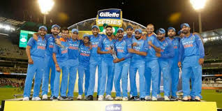
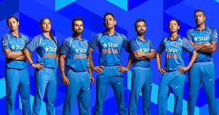
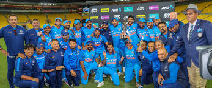
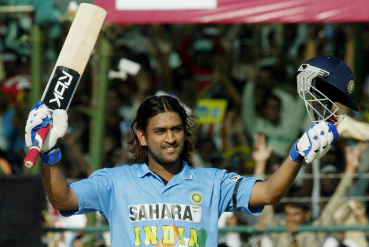
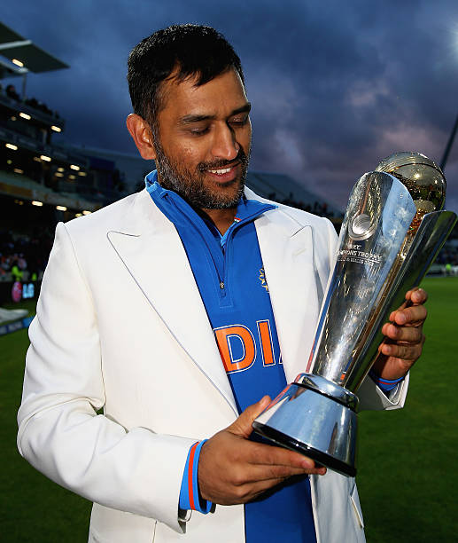
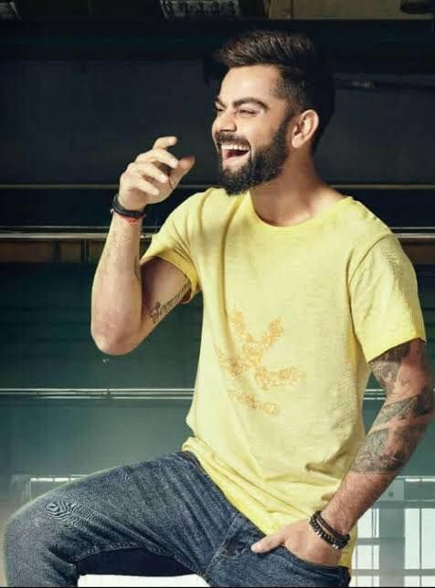
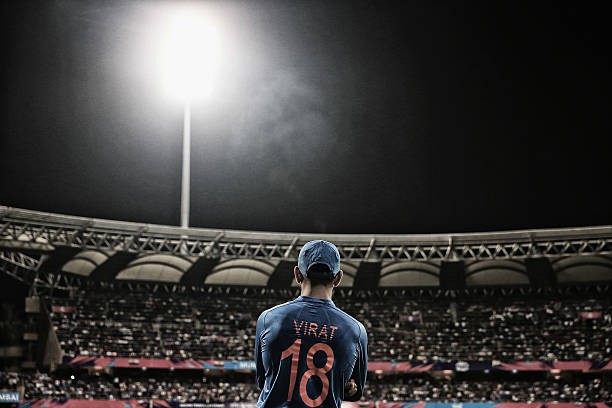
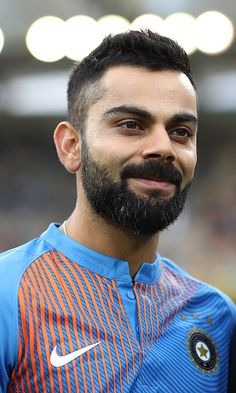

Indian Cricketers
Sachin
Dhoni
King Kohli
Rohit Sharma
TEAM INDIA
INDIAN CRICKET TEAM
Cricket was introduced to India by British sailors in the 18th century, and the first cricket club was established in 1792. India's national cricket team did not play its first Test match until 25 June 1932 at Lord's, becoming the sixth team to be granted test cricket status. From 1932 India had to wait until 1952, almost 20 years for its first Test victory. In its first fifty years of international cricket, India was one of the weaker teams, winning only 35 of the first 196 Test matches it played. The team, however, gained strength in the 1970s with the emergence of players such as batsmen Gavaskar, Viswanath, Kapil Dev, and the Indian spin quartet.
|  |
 |
 |
 |
Traditionally much stronger at home than abroad, the Indian team has improved its overseas form, especially in limited-overs cricket, since the start of the 21st century, winning Test matches in Australia, England and South Africa. It has won the Cricket World Cup twice – in 1983 under the captaincy of Kapil Dev and in 2011 under the captaincy of Mahendra Singh Dhoni. After winning the 2011 World Cup, India became only the third team after West Indies and Australia to have won the World Cup more than once,[10] and the first cricket team to win the World Cup at home. It also won the 2007 ICC World Twenty20 and 2013 ICC Champions Trophy, under the captaincy of MS Dhoni. It was also the joint champions of 2002 ICC Champions Trophy, along with Sri Lanka.
SACHIN
Sachin Ramesh Tendulkar (/ˌsʌtʃɪn tɛnˈduːlkər/ (About this soundlisten); born 24 April 1973) is a former Indian international cricketer who was also the captain of the Indian national team. He is widely regarded as one of the greatest batsmen in the history of cricket.[5] He is the highest run scorer of all time in International cricket. Considered as the world's most prolific batsman of all time,he is the only player to have scored one hundred international centuries, the first batsman to score a double century in a One Day International (ODI), the holder of the record for the most runs in both Test and ODI cricket, and the only player to complete more than 30,000 runs in international cricket.
Tendulkar took up cricket at the age of eleven, made his Test debut on 15 November 1989 against Pakistan in Karachi at the age of sixteen, and went on to represent Mumbai domestically and India internationally for close to twenty-four years. In 2002, halfway through his career, Wisden Cricketers' Almanack ranked him the second-greatest Test batsman of all time, behind Don Bradman, and the second-greatest ODI batsman of all time, behind Viv Richards.Later in his career, Tendulkar was a part of the Indian team that won the 2011 World Cup, his first win in six World Cup appearances for India.He had previously been named "Player of the Tournament" at the 2003 edition of the tournament, held in South Africa. In 2013, he was the only Indian cricketer included in an all-time Test World XI named to mark the 150th anniversary of Wisden Cricketers' Almanack.He is affectionately known as Little Master or Master Blaster.
DHONI
Mahendra Singh Dhoni (About this soundpronunciation (help·info) born 7 July 1981), is a former Indian international cricketer who captained the Indian national team in limited-overs formats from 2007 to 2016 and in Test cricket from 2008 to 2014. Under his captaincy, India won the inaugural 2007 ICC World Twenty20, the 2010 and 2016 Asia Cups, the 2011 ICC Cricket World Cup and the 2013 ICC Champions Trophy. A right-handed explosive middle-order batsman and wicket-keeper, Dhoni is one of the highest run scorers in One Day Internationals (ODIs) with more than 10,000 runs scored and is considered an effective "finisher" in limited-overs formats.[2][3][4] He is widely regarded as one of the best wicket-keeper batsman and captain in the history of the game.[5][6][7][8][9] He was also the first wicket-keeper to effect 100 stumpings in ODI cricket.[10]
|  |
 |
 |
 |
Dhoni made his ODI debut on 23 December, 2004 against Bangladesh, and played his first Test a year later against Sri Lanka. He has been the recipient of many awards, including the ICC ODI Player of the Year award in 2008 and 2009 (the first player to win the award twice), the Rajiv Gandhi Khel Ratna award in 2007, the Padma Shri, India's fourth highest civilian honour, in 2009 and the Padma Bhushan, India's third highest civilian honour, in 2018.[11] Dhoni was named as the captain of the ICC World Test XI in 2009, 2010 and 2013. He has also been selected a record 8 times in ICC World ODI XI teams, 5 times as captain. The Indian Territorial Army conferred the honorary rank of Lieutenant Colonel[12] to Dhoni on 1 November 2011. He is the second Indian cricketer after Kapil Dev to receive this honour.
King Kohli
Virat Kohli (About this soundpronunciation (help·info); born 5 November 1988) is an Indian cricketer and the current captain of the India national team. A right-handed top-order batsman, Kohli is regarded as one of the best contemporary batsmen in the world.He plays for Royal Challengers Bangalore in the Indian Premier League (IPL), and has been the team's captain since 2013. Since October 2017, he has been the top-ranked ODI batsman in the world and is currently 2nd in Test rankings with 886 points. Among Indian batsmen, Kohli has the best ever Test rating (937 points), ODI rating (911 points) and T20I rating (897 points).
|  |
 |
 |
 |
Kohli captained India Under-19s to victory at the 2008 Under-19 World Cup in Malaysia. After a few months later, he made his ODI debut for India against Sri Lanka at the age of 19. Initially having played as a reserve batsman in the Indian team, he soon established himself as a regular in the ODI middle-order and was part of the squad that won the 2011 World Cup. He made his Test debut in 2011 and shrugged off the tag of "ODI specialist" by 2013 with Test hundreds in Australia and South Africa.Having reached the number one spot in the ICC rankings for ODI batsmen for the first time in 2013,Kohli also found success in the Twenty20 format, winning the Man of the Tournament twice at the ICC World Twenty20 (in 2014 and 2016).
ROHIT SHARMA
Rohit Gurunath Sharma (born 30 April 1987) is an Indian international cricketer who plays for Mumbai in domestic cricket and captains Mumbai Indians in the Indian Premier League as a right-handed batsman and an occasional right-arm off break bowler. He is the vice-captain of the Indian national team in limited-overs formats.
Outside cricket, Sharma is an active supporter of animal welfare campaigns. He is the official Rhino Ambassador for WWF-India and is a member of People for the Ethical Treatment of Animals (PETA). He has worked with PETA in its campaign to raise awareness of the plight of homeless cats and dogs in India.